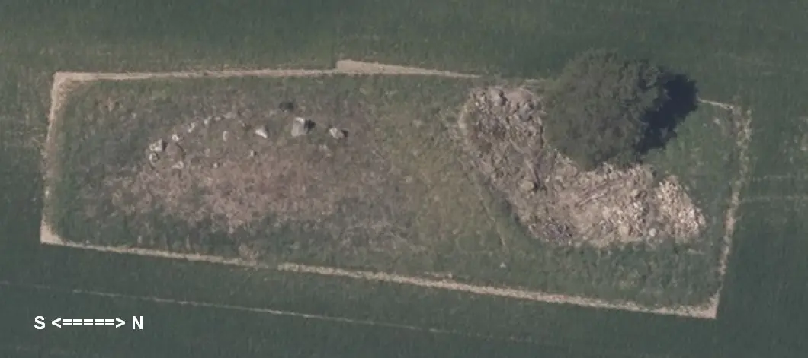
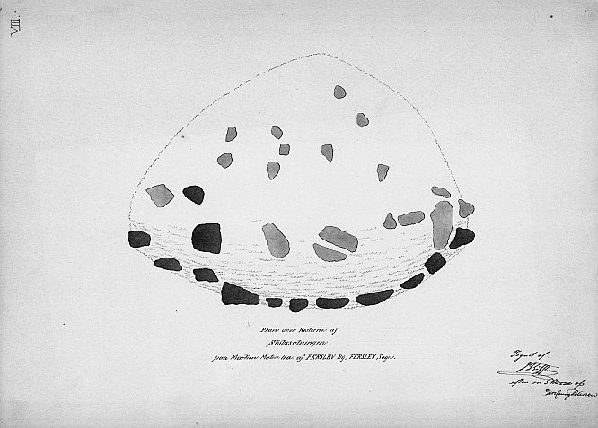
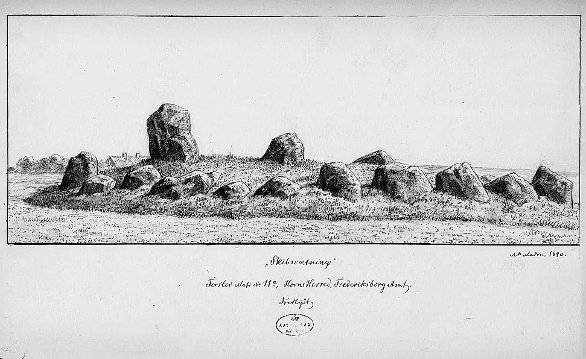
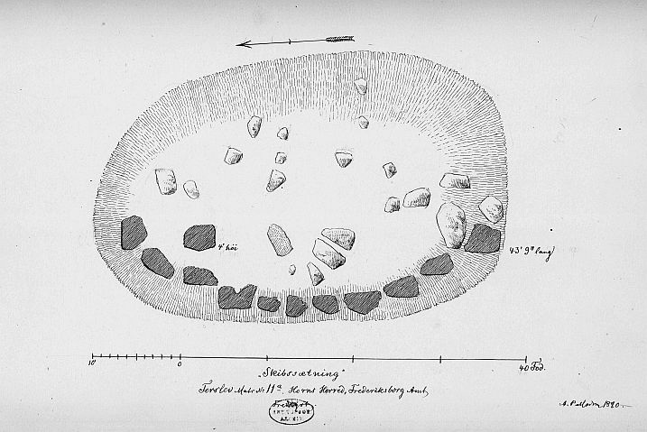

Ferslev
Schiffssetzung


Ferslev - Letztes Update 31.10.2023
Geo-Daten N/O: 55.769140 11.91753
Anschrift: Egebjergvej 1, 4050 Skibby
Screenshot vom
31.10.2023 - von
Skråfoto, das zum
"Styrelsen
for Dataforsyning og Infrastruktur" gehört.
Skråfoto
ist eine Webanwendung, die von der Dänische
Agentur für Datenversorgung und Infrastruktur
weltweit kostenlos bereitgestellt wird -
frei von Urheberrechten. Die Aufnahmen werden alle zwei Jahre erneuert
und neben einer Senkrechtaufnahme wird ein Schrägbild aus jeder Himmelsrichtung
angeboten. Hier die aktuellste Aufnahme vom 12.05.2023.

Etwa auf halber Strecke zwischen Ferslev und Venslev zweigt nach rechts der Egebjergvej ab. Kurz vor dem Ejdamsgården (Hof) liegt linker Hand auf einem kleinen Hügel, innerhalb eines Ackers, eine in Dänemark eher selten vorkommende spitzovale Schiffssetzung aus großen Steinen.
Sie liegt in etwa in N-S Richtung und weist eine Länge von ca. 14 m und eine Breite ca. 10 m auf. Der im Norden aufrecht stehende Granitblock hat eine Höhe von ca. 1,25 m. Auf der westlichen Seite sind 9 größere Steine aneinandergereiht, die östliche Seite ist leider nicht mehr so gut erhalten, da etliche Steine in die Erde niedergesunken sind (siehe Panoramaaufnahme). Insgesamt finden sich noch über 20 Steine.
Die erste Beschreibung der Schiffssetzung stammt aus dem Jahr 1873, als (Karl Nicolay) Henry Petersen (*20.03.1849 - 21.09.1896, dänischer Archäologe, 1879 im Nationalmuseum angestellt, ab 1892 als Leiter der Mittelalterabteilung) für das Nationalmuseum vor Ort war und eine Bestandsaufnahme durchführte. Er schrieb: "Hvor terrainet begynder at skråne ned imod en fordums lille sø, ligger i s.v. retning for gården en stensætning, der vel ikke er bevaret i sin oprindelige skikkelse, men dog tydeligt ses at have haft en oval, til bægge ender spidst udløbende grundform, med andre ord: en af de her i landet så sjældne skibssætninger.- Den ligger i retningen n.n.ø.-s.s.v. Hele dens v.n.v. side er fuldstændigt bevaret, så vel som bægge endestene, der, ihvorvel de i størrelse ikke afvige meget fra de andre stene, dog tydeligt nok har en med forsæt valgt, fra dem forskellig form. De vise skibssætningens længde som 39'. Randstenene mod v.n.v. ere 9 i tallet, 3'-4' høje; de fire sydligste udmærke sig ved en fladagtig form med den jævneste side indad. I skibssætningens længdeakse, 5'2" fra den n.ord endesten/stavnsten, står en på enden rejst omtrent firsidet naturlig granitblok, der hæver sig 3'6" over den vistnok 2-2 1/2' høje jordfyld indenfor randstenene. Tæt ved endestenen/stavnstenen mod s.s.v. ligger en 4'9" l. sten af en lignende dannelse omvæltet; den har måske stået oprejst her, svarende til hin i den modsatte ende. Imellem disse stenen ligge tvende større, til dels sprængte granitblokke, der sikkert ikke have haft noget opret stilling.- Skibssætningens ø.s.ø. langside er fuldstændigt forstyrret (kun en enkelt sten, (se planen) indtager muligt sin oprindelige plads): dens bredde kan derfor kun angives efter et skøn at have været 16'-18'. Ved opgravningen af randstenene er meget fyld kastet udenfor den grænse, de have dannet for skibssætningen. Derfor har det areal, denne nu tilsyneladende indtager (se planen) en bredde af omtr. 32'. Mulig er en del af de opgravede randsten at søge blandt de større stene 15 i tallet, af hvilke de fleste rage mere eller mindre frem af den udkastede fyld.- Det mindes ikke, når hin forstyrrelse af skibssætningen er sket. (Da "oldtidsminderne" på lodden ved gårdens salg fra Svanholm gods ere forbeholdte det offentlige, er skibssætningens bevaring sikret.- Ejeren, der var uvidende om hin bestemmelse i hans skøde, havde i sinde at lade den styrte ned i en mergelgrav, som nærmede sig dens fod. Det er betydet ham ej at fortsætte mergelgravningen så skibssætningen derved kan lide nogen skade; ligesom han er underrettet om at den mindste forstyrrelse af denne vil påføre ham mulkt). Bevoksning: 1989: Græs".
Übersetzung: "Wo das Gelände in Richtung eines alten kleinen Sees abzufallen beginnt, liegt in s-w Richtung vom Hof eine Steinfassung, die wohl nicht mehr in ihrer ursprünglichen Form erhalten, aber es doch deutlich zu erkennen ist, dass sie eine ovale, an beiden Enden spitz zulaufende Grundform hatte, mit anderen Worten: eine der seltenen Schiffssetzungen in diesem Land. Es liegt in der Richtung nno-ssw. Die gesamte n-w Seite ist vollständig erhalten, ebenso die beiden Endsteine, die sich zwar in ihrer Größe nicht wesentlich von den anderen Steinen unterscheiden, aber offensichtlich von jemandem mit Absicht gewählt wurden, da sie eine andere Form als diese hatten. Die Schiffslänge beträgt 39 Fuß. Die Seitensteine Richtung w-n-w sind 9 an der Zahl, 3'-4' hoch; Die vier südlichsten zeichnen sich durch eine flache Form mit der glattesten Seite nach innen aus. In der Längsachse des Schiffs, 5'2" vom nördlichen Schlussstein/Stevnstein entfernt, steht an seinem Ende ein etwa vierseitiger natürlicher Granitblock, der sich 3'6" über den wahrscheinlich 2 1/2 erhebt. Hohe Erdfüllung innerhalb der Relingsteine. In der Nähe des Endsteins/Stevensteins in Richtung s-s-w ein 4'9" langer Stein ähnlicher Formation ist umgeworfen; er könnte hier aufrecht gestanden haben, ähnlich wie der am gegenüberliegenden Ende. Zwischen diesen Steinen liegen zwei größere, teilweise zerbrochene Granitblöcke, die wahrscheinlich keine Position hatten. Die Leeseite der Relingsteine ist völlig zerstört, nur ein einziger Stein befindet sich möglicherweise an seiner ursprünglichen Stelle. Seine Breite kann daher nur auf 16'-18' geschätzt werden. Es wurde viel Füllmaterial aufgeworfen, das man für die Schiffsanlage gebildet hatte. Daher hat die Fläche, die es jetzt offenbar einnimmt, eine Breite von etwa 32 Fuß. Es ist möglich, dass ein Teil der ausgegrabenen Reklingsteine betroffen ist. Gesucht wurden unter den größeren Steinen 15 an der Zahl, von denen die meisten mehr oder weniger aus der geworfenen Füllung herausragten. Man kann sich nicht erinnern, wann die Störung der Schiffssetzung stattgefunden hat. Die Erhaltung der Anlage ist gesichert. Der Eigner beabsichtigte es in eine Mergelgrube fallen zu lassen, die sich seinem Fuß näherte, da er die Bestimmungen nicht kannte. Er wurde angewiesen, den Mergelabbau nicht fortzusetzen, da die Setzung dadurch Schaden erleiden könnte; ebenso wie ihm mitgeteilt wurde, dass die geringste Störung hiervon eine Strafe nach sich zieht. Vegetation: Gras".
1890 zeichnete A.P. Madsen (*22.12.1822 in Kopenhagen - 26.09.1911 in Kopenhagen, dänischer Offizier, Maler, Graveur und Kartograf) einige Skizzen - - siehe unten. Erneut für das Nationalmuseum war 1942 Professor Carl Johan Becker (*3.9.1915 - 3.6.2001, dänischer Archäologe / Prähistoriker) vor Ort, der ergänzende, bzw. korrigierende Aufzeichnungen anfertigte. Dieser hatte von 1952 bis 1985 die Professor für nordische Archäologie und europäische Vorgeschichte an der Universität Kopenhagen inne, wo er die Nachfolge seines Lehrers Johannes Brøndsted (*05.10.1890 - 16.08.1965, Archäologe, Prähistoriker und Direktor des Dänischen Nationalmuseums von 1951 bis 1960) antrat.
Der entsprechende Eintrag zu der Schiffssetzung in "Fund og Fortidsminder" ist hier verlinkt.
Darauf finden sich auch diese alten Skizzen - Lizenz Public Domain

Nach einer Skizze von Henry Petersen von 1873

A.P. Madsen von 1890

A.P. Madsen von 1890 - Draufsicht
Anders Peter Madsen (*22.12.1822 in Kopenhagen - 26.09.1911 in Kopenhagen, dänischer Offizier, Maler, Graveur und Kartograf)
Bildquelle: Digitale Sammlunmg Königliche Bibliothek Kopenhagen - Lizenz: Public Domain
Anders Peter Madsen hat mehrere vortreffliche Werke zur Stein-/Bronzezeit in Dänemark mit Text und tollen Grafiken veröffentlicht, die heutzutage dankenswerter Weise als Digitalisat über die Königliche Bibliothek in Kopenhagen abgerufen werden können: